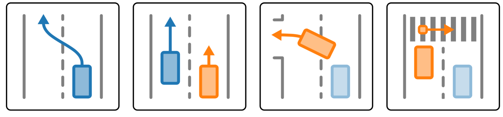
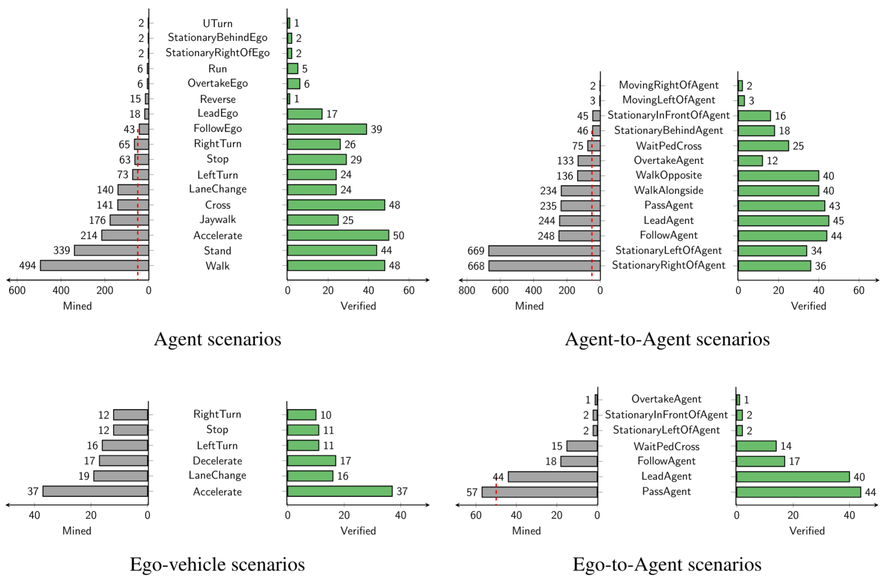
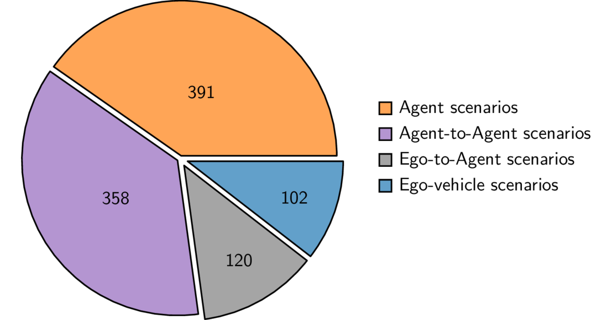
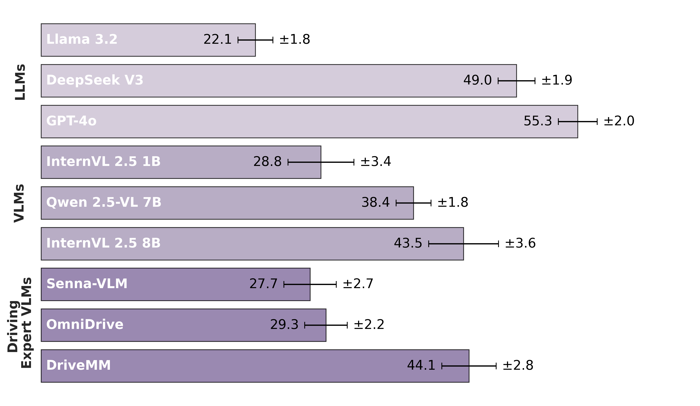
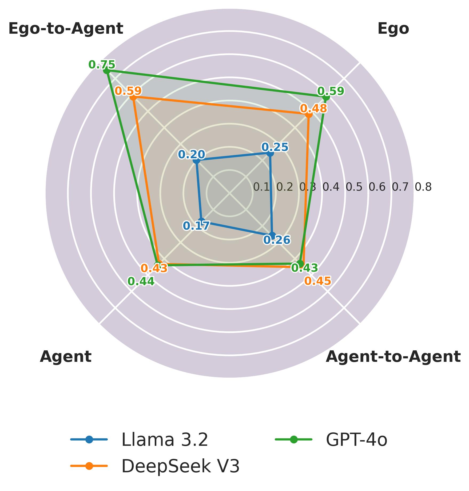
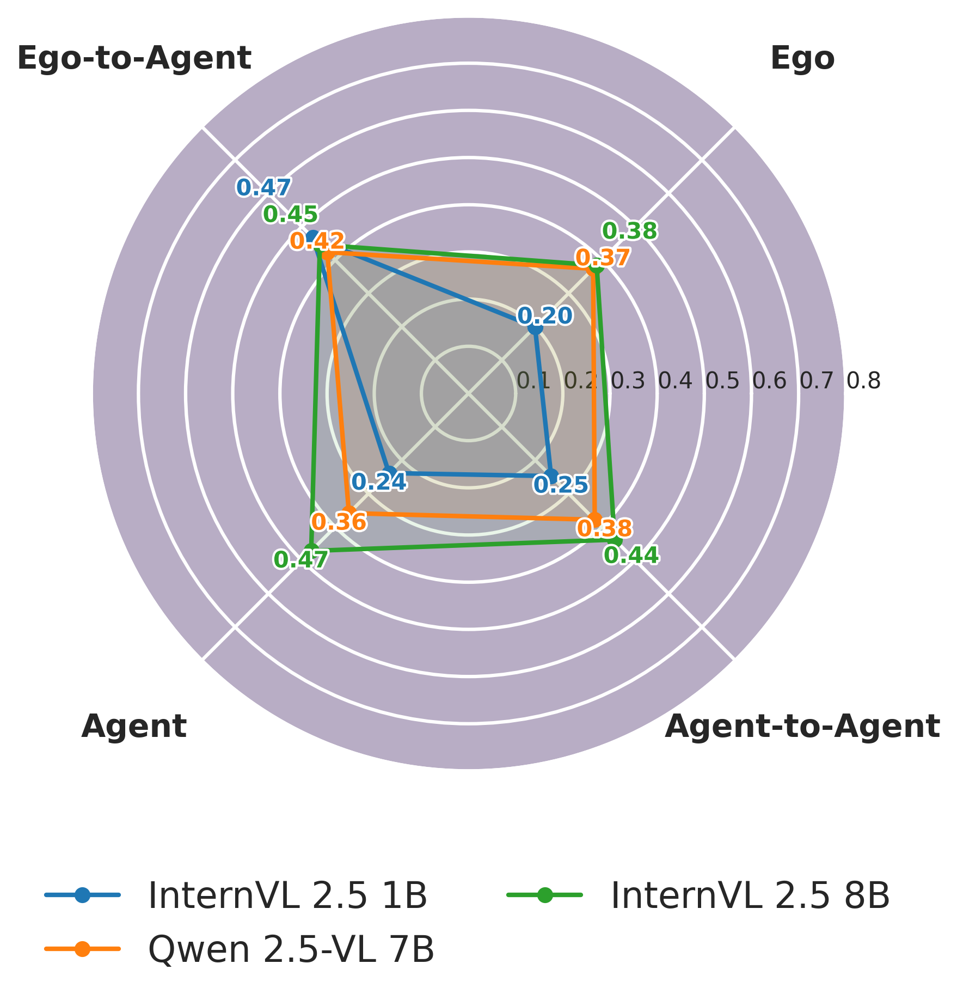

TL;DR
STSBench a new framework for benchmarking Vision-Language Models (VLMs) in autonomous driving. STSBench uses multi-view videos and LiDAR to test spatio-temporal reasoning and complex traffic interactions. Evaluations using 971 human-verified questions revealed that current models struggle significantly with fundamental traffic dynamics, highlighting an urgent need for better model architectures.
Scenario Prompt
Ego waiting pedestrian to cross
Scenario Categories

STSBench covers common ego-vehicle (blue) actions, e.g., ego lane change and interactions with agents (orange), e.g., ego overtaking agent, important for vehicle control. In addition, to test for complex spatio-temporal understanding, we evaluate agent actions, e.g., agent left turn, and interactions between agents, e.g., agent waiting for pedestrian to cross.Mined nuScenes Scenarios
Ego waiting pedestrian to cross
Agent accelrating
Agent overtaking ego
Agent jaywalking
Agent reversing
Agent running
Agent stopping
Ego changing lane
Ego turning left
Ego overtaking agent
Ego stopping
Scenario Statistics
Number of Scenarios

Number of mined scenarios in total (gray) and the remaining samples (green) after sub-sampling and verification. Scenarios with more than 50 samples (dashed red line) have been sub-sampled considering spatial distribution, occlusion, and distance to the ego-vehicle.
Number of Scenarios per Category

Evaluations
Average Performance

Detailed Performance



BibTeX
@inproceedings{neurips2025stsbench,
title={{STSBench: A Spatio-temporal Scenario Benchmark for Multi-modal Large Language Models in Autonomous Driving}},
author={Fruhwirth-Reisinger, Christian and Mali{\'c}, Du{\v{s}}an and Lin, Wei and Schinagl, David and Schulter, Samuel and Possegger, Horst},
booktitle={In Proceedings of the Conference on Neural Information Processing Systems},
year={2025}
}